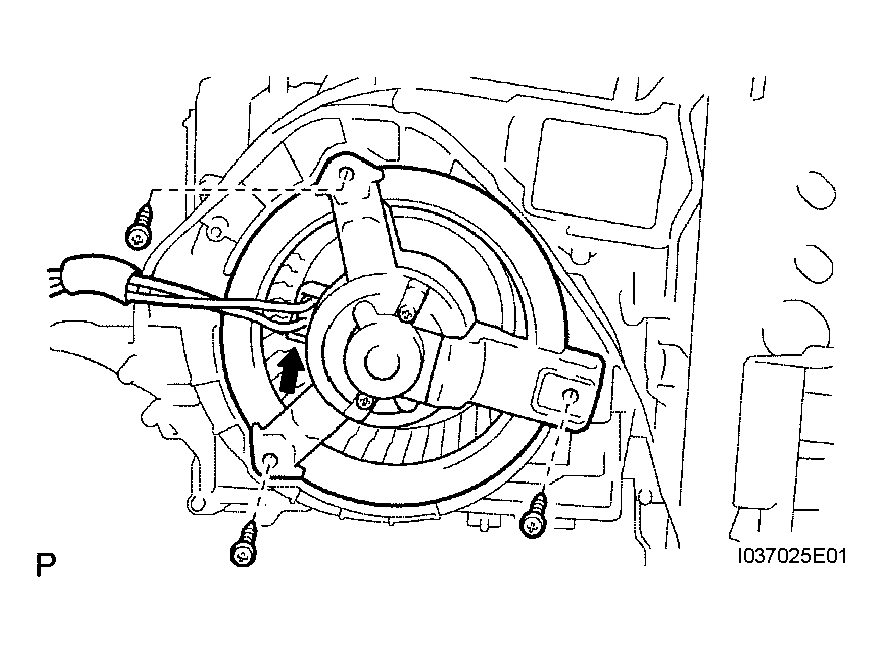

Blower Motor: Removal
REMOVE ECM COVER (See
REMOVAL
)
REMOVE ECM (See
REMOVAL
)
REMOVE BLOWER WITH FAN MOTOR SUB-ASSEMBLY
Disconnect the connector.
Remove the 3 screws and blower motor.
Fig 1: Removing 3 Screws And Blower Motor

Courtesy of © TOYOTA, LICENSE AGREEMENT TMS1002